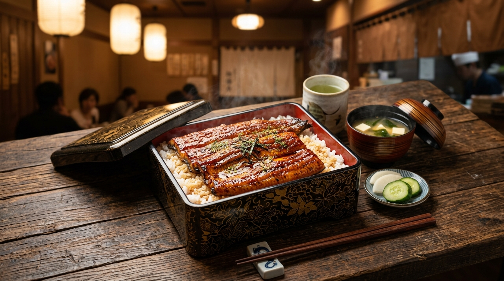
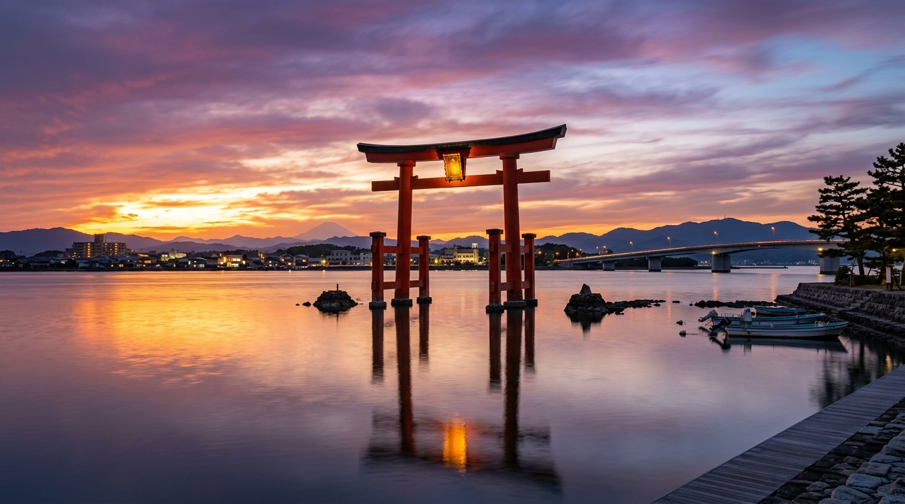
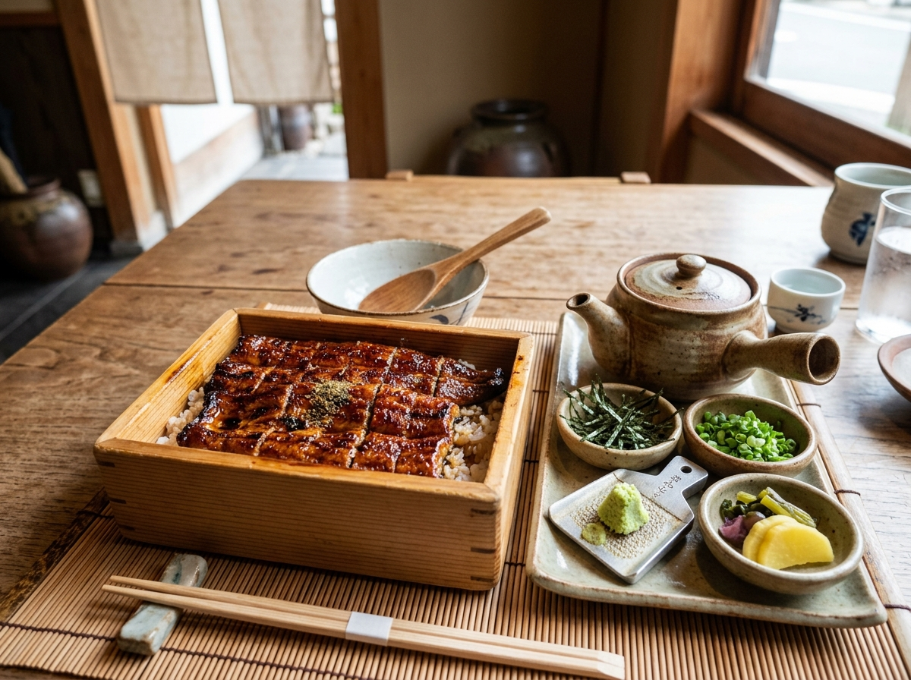
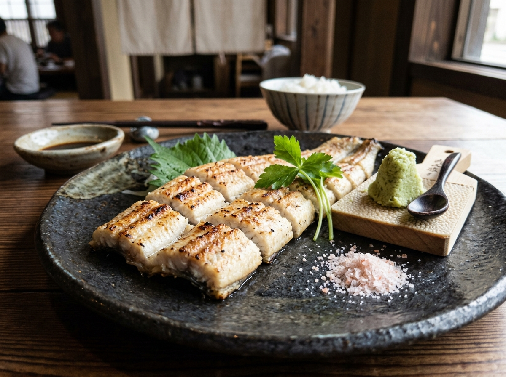

汽水域（きすいいき）ならではの豊富な栄養と、澄み渡る地下水で育まれた浜名湖うなぎ。
ふっくら柔らかな「関東風」と、香ばしくジューシーな「関西風」が交差する聖地で、至福のひとときをご堪能ください。
明治33年から続く日本のうなぎ養殖の聖地・浜名湖の自然と職人技

浜名湖は太平洋の海水と河川の淡水が入り混じる日本有数の汽水湖です。豊かな遠州灘のミネラルと温和な気候は、うなぎの生育に理想的な条件を備えています。
養殖池には浜名湖周辺のミネラル豊富な地下水を使用。泥臭さがなく、澄んだ味わいに仕上がります。
成長段階に応じた栄養バランス抜群の特製配合餌を使用。脂の乗りと質の良い白身を作ります。
服部倉次郎氏が浜名湖で日本初の本格養殖に成功。120年以上のノウハウが継承されています。
ビタミンA、B1、E、DHA・EPAが豊富。美容とスタミナ維持に最適なスーパーフードです。
浜名湖は日本のうなぎ文化の東西境界線！両方の技法を味わえる稀有な地域です
秘伝のタレが染み込んだうな重から、素材際立つ白焼きまで
重箱を開けた瞬間に広がる甘辛いタレと香ばしい香り。ふっくら蒸し上げたうなぎと炊き立てのご飯が重なり合う至高の逸品です。

体験型おすすめ細かく刻んだ蒲焼きをご飯の上に盛りつけた人気料理。そのまま・薬味・出汁茶漬けの3段階で味の変化を楽しめます。

うなぎ通の選択タレを使わず炭火でじっくり焼き上げた通好みの料理。浜名湖うなぎ本来の上質な脂の甘みと旨味を、わさびや岩塩で直に堪能。
ステップをクリックして、本場の正しい食べ方をシミュレーション
まずはお茶碗に軽く盛り、うなぎ本来の香ばしさとタレの旨味、ご飯のハーモニーをシンプルに味わいます。浜名湖産うなぎ特有の上質な脂と秘伝ダレの深みをダイレクトに感じる最初の一杯です。
エリアや焼き方の好みに合わせて厳選した名店を検索
3つの簡単な質問から、今日のおすすめ料理とお店をご提案します
東京・大阪・名古屋からのアクセスも抜群
・東京駅から東海道新幹線で浜松駅まで約1時間25分
・名古屋駅から約30分 / 新大阪駅から約1時間25分
浜松駅から弁天島や舘山寺温泉行きのバス・JR線が便利です。
東名高速道路「三ヶ日IC」「浜松西IC」「舘山寺スマートIC」から浜名湖周辺の各名店へスムーズアクセス。ドライブコースにも最適です。
夏の「土用の丑の日」はもちろん、天然に近い味わいを楽しむなら脂が一番乗る秋〜冬（10月〜12月）が浜名湖うなぎ最高のシーズンです！